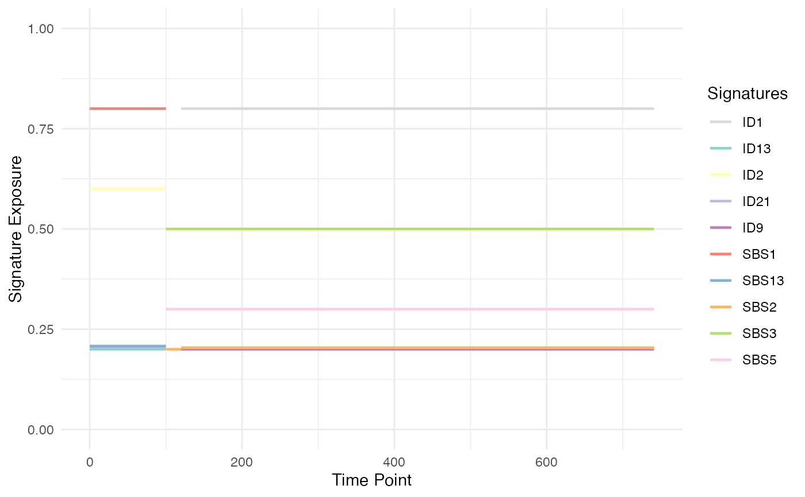
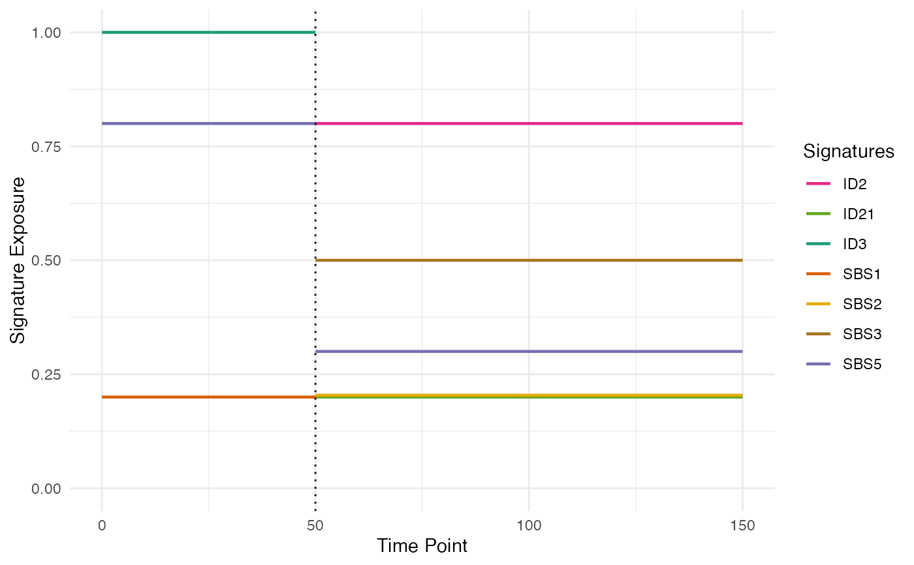
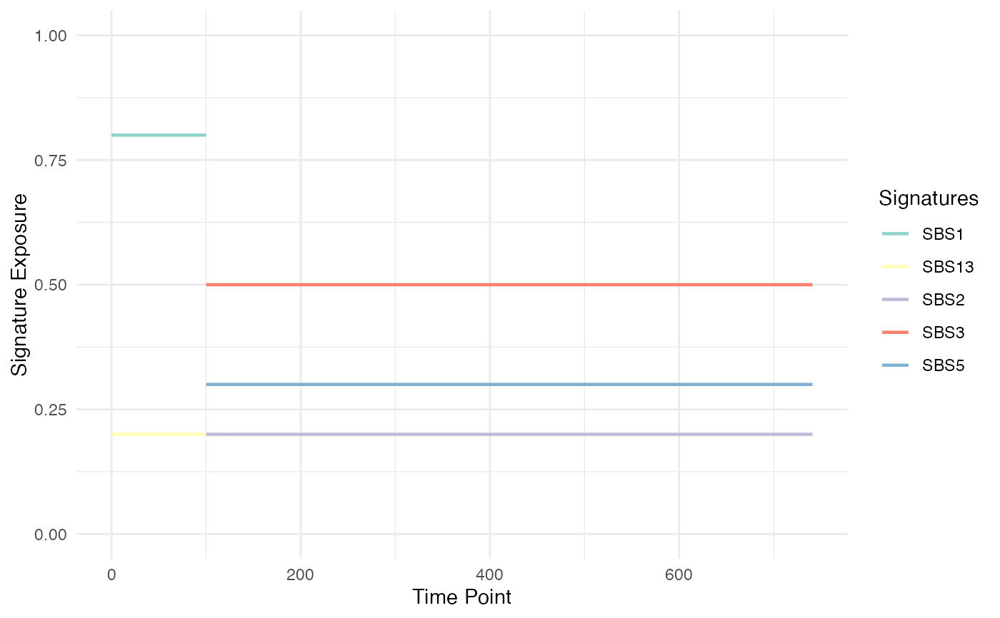

Plot the signature exposure timeline of a phylogenetic forest
Source:R/plot_exposure_timeline.R
plot_exposure_timeline.RdPlots the signatures exposure changes along a phylogenetic forest.
Usage
plot_exposure_timeline(
phylogenetic_forest,
linewidth = 0.8,
emphasize_switches = FALSE,
mutation_type = "all",
pal_name = "Set3"
)Arguments
- phylogenetic_forest
A phylogenetic forest.
- linewidth
The width of the lines in the plot (default:
0.8).- emphasize_switches
A Boolean flag to emphasize the exposure switches (default:
FALSE).- mutation_type
The type of mutations whose exposure plot is requested. It can be
"all","indel", or"SNV"(default:"all")- pal_name
The name of a
RColorBrewerpalette (default:"Set3").
Examples
# use a phylogenetic forest example
forest <- example("PhylogeneticForest")
# plotting the forest exposure timeline
plot_exposure_timeline(forest)

# plotting the forest exposure timeline emphasizing the exposure switches
plot_exposure_timeline(forest, emphasize_switches = TRUE)

# plotting the forest exposure timeline of SNVs
plot_exposure_timeline(forest, mutation_type = "SNV")
